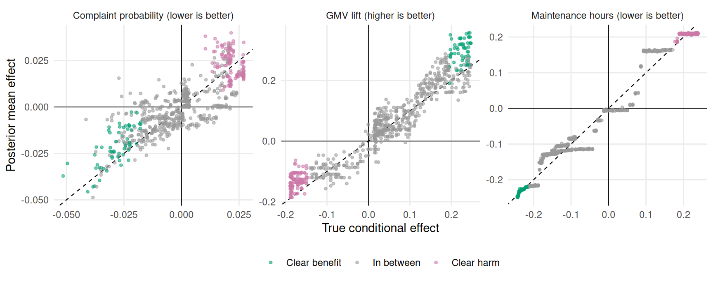
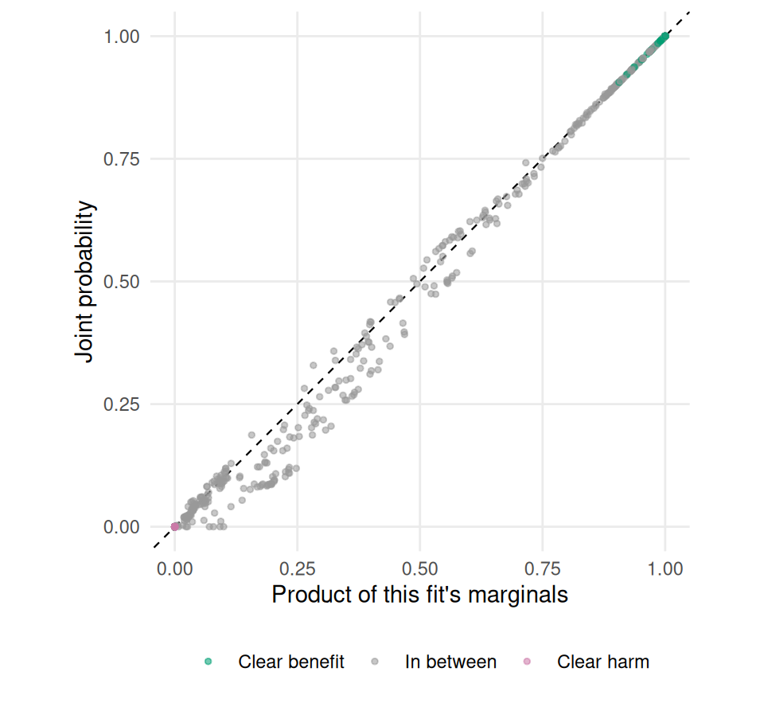

library(longbet)
library(dplyr)
library(tidyr)
library(tibble)
library(ggplot2)
library(purrr)
library(knitr)
source("R/longbet-common.R")
source("R/longbet-rollout.R")
source("R/longbet-artifacts.R")
verify_longbet_environment()
lb_engine_fingerprint <- get_longbet_engine_fingerprint()
lb_chapter_fingerprint <- digest::digest(file = knitr::current_input(), algo = "sha256")
lb_dependencies <- get_longbet_dependencies()
knitr::opts_chunk$set(cache.extra = list(lb_engine_fingerprint, lb_chapter_fingerprint,
lb_dependencies))
rollout <- simulate_longbet_rollout()
unpack_rollout(rollout)
lb_fit <- get_or_create_core_fit(rollout)
cl <- get_or_create_common_launch(lb_fit, rollout)
S_target <- cl$S_target
tau_hat_draws <- cl$tau_hat_draws
tau_hat <- cl$tau_hat
tau_truth_S <- cl$tau_truth_S
initial_lift <- cl$initial_lift
gmv_week <- cl$gmv_week
mu0_hat <- cl$mu0_hat
sigma2_hat <- cl$sigma2_hat26 LongBet: Decisions and Multiple Outcomes
NoteContinuation of the LongBet rollout study
This chapter continues the randomized marketplace rollout introduced in LongBet: Dynamic Treatment Effects in Staggered Rollouts. It reuses the same seller population (\(N=3,000\)), calendar, log weekly GMV outcome scale, and fitted model objects to examine economic decision rules and multi-outcome trade-offs. Advanced extensions, including GP forecasting and observational panel identification, are covered in LongBet: Forecasting, Observational Panels, and Diagnostics.
26.1 The Decision
The marketplace keeps 12% of GMV and the optimizer costs $500 per seller per year. An effect estimate becomes a dollar valuation only after choosing a baseline revenue path, a treatment trajectory, and a decision rule. Each of those choices needs to be visible.
Here the baseline is a fixed estimate of untreated weekly revenue over the last four study weeks. It uses the model’s fitted untreated log outcome, including the unit intercept, with plug-in median parameter estimates for the log-normal conversion. It uses no future observations or simulator parameters. We hold that baseline constant over the decision year. This makes the analysis conditional on a baseline estimate; its intervals do not include baseline estimation error or uncertainty about future revenue growth.
The first scenario also holds the effect at its week-14 value for the remaining 38 weeks of the year. For the first 14 weeks, it uses the all-seller adoption trajectory used in Figure 25.6. These are 52-week scenarios, not forecasts of realized annual revenue. Later in this section we vary both assumptions.
A log effect converts to proportional lift as expm1(tau). The residual variance cancels from the treated-to-untreated ratio under the model’s common log-normal error distribution. We apply that conversion to each effect draw before valuing a seller. For monetary summaries we report medians and quantiles: a proper posterior does not by itself guarantee a finite mean after exponentiation. In particular, integrating a log-normal dollar mean over an inverse-gamma variance posterior need not have a finite expectation. Fixing the baseline avoids claiming that the following is such an integrated dollar forecast.
TAKE_RATE <- 0.12
ANNUAL_COST <- 500
HOLD_WEEKS <- 52 - S_target
annual_lift <- initial_lift + HOLD_WEEKS * expm1(tau_hat_draws)
net_draws <- TAKE_RATE * gmv_week * annual_lift - ANNUAL_COST
stopifnot(all(is.finite(net_draws)), all(gmv_week > 0))
median_net <- apply(net_draws, 1, median)
p_worth <- rowMeans(net_draws > 0)
# Truth is used only for scoring, never for selecting an operational policy.
recent <- tail(seq_along(week_study), 4)
recent_calendar <- week_study[recent]
gmv_week_true <- rowMeans(exp(mu0_true[, recent_calendar, drop = FALSE] + 0.28^2 / 2))
true_initial_lift <- rowSums(expm1(outer(w_i, seq_len(S_target), function(a, s)
a * h_grow(s) + (1 - a) * h_fade(s))))
true_scenario_lift <- true_initial_lift + HOLD_WEEKS * expm1(tau_truth_S)
net_true <- TAKE_RATE * gmv_week_true * true_scenario_lift - ANNUAL_COST
breakeven <- ANNUAL_COST / (TAKE_RATE * 52 * gmv_week)
tibble(
Quantity = c("Median estimated weekly baseline GMV",
"Median DGP-known weekly baseline GMV (scoring only)",
"Median break-even annual proportional lift"),
Value = c(scales::dollar(median(gmv_week)),
scales::dollar(median(gmv_week_true)),
scales::percent(median(breakeven), 0.1))
) %>% kable(caption = "The baseline estimate and the separate simulator benchmark.")| Quantity | Value |
|---|---|
| Median estimated weekly baseline GMV | $732.35 |
| Median DGP-known weekly baseline GMV (scoring only) | $743.02 |
| Median break-even annual proportional lift | 10.9% |
The DGP-known baseline is the simulator’s expected untreated revenue over those same four weeks. It is available to us for validation, not to the marketplace when choosing sellers. The score below uses that baseline and the true treatment effects, while imposing the same flat-baseline and flat-tail scenario. It therefore measures errors in both baseline and effect estimation within that scenario. It is not a realized cash-flow observation.
# Ranking by the posterior median is a transparent quantile-based rule.
# It is not claimed to maximize posterior expected total profit.
by_value <- order(median_net, decreasing = TRUE)
top_k <- function(K) {
keep <- rep(FALSE, n)
eligible <- by_value[median_net[by_value] > 0]
keep[head(eligible, min(K, length(eligible)))] <- TRUE
keep
}
policies <- list(
"Do not roll out" = rep(FALSE, n),
"Roll out to everyone" = rep(TRUE, n),
"Broad catalogs (>= 50 listings)" = broad,
"Up to 450 by positive median net value" = top_k(450),
"Up to 900 by positive median net value" = top_k(900),
"Up to 1350 by positive median net value" = top_k(1350),
"Positive median net value (uncapped)" = median_net > 0,
"P(net value > 0) >= 0.90" = p_worth >= 0.90,
"Oracle for the stated scenario (scoring only)" = net_true > 0
)
policy_value <- function(keep, label) {
total <- colSums(net_draws[keep, , drop = FALSE])
tibble(
Policy = label,
Sellers = sum(keep),
`Conditional median (k/yr)` = median(total) / 1000,
`Conditional 95% interval` = sprintf(
"[%.0f, %.0f]", quantile(total, 0.025) / 1000,
quantile(total, 0.975) / 1000
),
`DGP-known scenario value (k/yr)` = sum(net_true[keep]) / 1000
)
}
policy_results <- imap_dfr(policies, policy_value)
policy_results %>% kable(
digits = 0,
caption = paste(
"Annual scenario values in thousands of US dollars.",
"Conditional intervals hold the estimated baseline and tail assumption fixed.",
"The DGP-known score uses true baselines and effects under the same scenario."
)
)| Policy | Sellers | Conditional median (k/yr) | Conditional 95% interval | DGP-known scenario value (k/yr) |
|---|---|---|---|---|
| Do not roll out | 0 | 0 | [0, 0] | 0 |
| Roll out to everyone | 3000 | 1387 | [1029, 1895] | 1478 |
| Broad catalogs (>= 50 listings) | 1077 | 1710 | [1348, 2135] | 1849 |
| Up to 450 by positive median net value | 450 | 1510 | [1169, 1941] | 1555 |
| Up to 900 by positive median net value | 900 | 1872 | [1482, 2371] | 1945 |
| Up to 1350 by positive median net value | 1304 | 1946 | [1543, 2476] | 2021 |
| Positive median net value (uncapped) | 1304 | 1946 | [1543, 2476] | 2021 |
| P(net value > 0) >= 0.90 | 1053 | 1913 | [1517, 2425] | 1995 |
| Oracle for the stated scenario (scoring only) | 1295 | 1924 | [1535, 2447] | 2044 |
The table preserves posterior dependence by summing sellers within each draw before taking an interval. A total’s median need not equal the sum of its sellers’ medians, so ranking by seller medians is a stated heuristic rather than a theorem about the best aggregate policy. The oracle maximizes the known scenario value because that score is additive; it is a validation benchmark, not a deployable rule.
The probability threshold expresses a different preference from the capacity ranking. Under a binary loss with constant cost for a wrong enable and constant cost for a missed profitable seller, a 0.90 threshold corresponds to assigning nine times as much loss to the former. That loss model ignores the magnitude of seller profits and losses. Choosing it requires a business judgment, and the probabilities here remain conditional on the estimated baseline and the annual scenario.
# The pooled ATT can mix well while seller-level valuations do not.
seller_value_diagnostics <- diagnose_draws(
net_draws, lb_fit, "Seller-level conditional annual net values"
)
nonempty_policies <- policies[vapply(policies, any, logical(1))]
policy_total_draws <- do.call(rbind, lapply(nonempty_policies, function(keep)
colSums(net_draws[keep, , drop = FALSE])))
policy_value_diagnostics <- diagnose_draws(
policy_total_draws, lb_fit, "Conditional annual policy totals"
)
diagnostic_rows <- bind_rows(
seller_value_diagnostics$summary, policy_value_diagnostics$summary
)
# Constant indicators contain no observed transitions; agreement at 0 or 1
# does not establish that a rare event has been adequately sampled.
varying_probability <- p_worth > 0 & p_worth < 1
if (any(varying_probability)) {
probability_diagnostics <- diagnose_draws(
1.0 * (net_draws[varying_probability, , drop = FALSE] > 0),
lb_fit, "Nonconstant seller profitability indicators"
)
diagnostic_rows <- bind_rows(diagnostic_rows, probability_diagnostics$summary)
}
diagnostic_rows %>% kable(
digits = 3, caption = "Sampling diagnostics for the quantities used in the decision."
)| label | rhat_max | ess_min | ess_tail_min | diagnostic_ok |
|---|---|---|---|---|
| Seller-level conditional annual net values | 2.473 | 4.923 | 27.008 | FALSE |
| Conditional annual policy totals | 1.182 | 15.958 | 52.617 | FALSE |
| Nonconstant seller profitability indicators | 5.251 | 4.256 | 4.256 | FALSE |
cat(sum(!varying_probability),
"seller profitability indicators were constant across retained draws.",
"Their rare-event probabilities are not certified by that agreement.\n")1959 seller profitability indicators were constant across retained draws. Their rare-event probabilities are not certified by that agreement.decision_sampling_ok <- all(diagnostic_rows$diagnostic_ok)The reported decision diagnostics fail at least one stated threshold. Treat the ranking, intervals, and probability rule as an unresolved illustration until further sampling establishes stability. A probability shown as zero or one from finite draws is not proof that an event is impossible or certain.
tibble(
Segment = c("Narrow catalog (< 50 listings)", "Broad catalog (>= 50 listings)"),
Sellers = c(sum(!broad), sum(broad)),
`Median true lift after 14 weeks` = scales::percent(
c(median(expm1(tau_truth_S[!broad])), median(expm1(tau_truth_S[broad]))), 0.1),
`Positive DGP-known scenario value` = scales::percent(
c(mean(net_true[!broad] > 0), mean(net_true[broad] > 0)), 0.1)
) %>% kable(caption = paste(
"Effect size and dollar value answer different questions.",
"Scenario value uses the true baseline and the stated 38-week flat tail."
))| Segment | Sellers | Median true lift after 14 weeks | Positive DGP-known scenario value |
|---|---|---|---|
| Narrow catalog (< 50 listings) | 1923 | 2.7% | 16.2% |
| Broad catalog (>= 50 listings) | 1077 | 23.6% | 91.3% |
A catalog rule selects on the effect surface, whereas an economic rule also depends on seller size and the flat $500 cost. The table quantifies that distinction under the stated scenario. It does not establish that every broad catalog should be enabled or that every narrow catalog should be excluded. Likewise, any gap between the estimated and DGP-known columns is an error for this realization. Baseline estimation, effect estimation, nonlinear transformation, and selection can all contribute; this table cannot identify which mechanism caused the gap.
# Hold the chosen policy fixed so that the table isolates assumptions rather
# than changing both assumptions and sellers at once.
decay_tail <- matrix(0, nrow(net_draws), ncol(net_draws))
for (k in seq_len(HOLD_WEEKS)) {
decay_tail <- decay_tail + expm1(tau_hat_draws * 2^(-k / 13))
}
lift_scenarios <- list(
"No effect after week 14" = initial_lift,
"Log effect halves every 13 weeks" = initial_lift + decay_tail,
"Flat log effect after week 14" = annual_lift
)
sensitivity_keep <- top_k(450)
decision_sensitivity <- imap_dfr(lift_scenarios, function(lift, label) {
map_dfr(c(0.8, 1.0, 1.2), function(baseline_factor) {
total <- TAKE_RATE * colSums(
gmv_week[sensitivity_keep] *
lift[sensitivity_keep, , drop = FALSE]
) * baseline_factor - ANNUAL_COST * sum(sensitivity_keep)
tibble(
`Effect scenario` = label,
`Baseline multiplier` = baseline_factor,
`Conditional median (k/yr)` = median(total) / 1000,
`Conditional 95% interval` = sprintf(
"[%.0f, %.0f]", quantile(total, 0.025) / 1000,
quantile(total, 0.975) / 1000
)
)
})
})
decision_sensitivity %>% kable(
digits = 1,
caption = paste(
"The same", sum(sensitivity_keep),
"sellers selected by the capacity rule, under nine valuation assumptions.",
"Baseline multipliers are sensitivity scenarios, not a posterior interval."
)
)| Effect scenario | Baseline multiplier | Conditional median (k/yr) | Conditional 95% interval |
|---|---|---|---|
| No effect after week 14 | 0.8 | 87.9 | [50, 141] |
| No effect after week 14 | 1.0 | 166.2 | [118, 233] |
| No effect after week 14 | 1.2 | 244.4 | [187, 324] |
| Log effect halves every 13 weeks | 0.8 | 515.7 | [392, 674] |
| Log effect halves every 13 weeks | 1.0 | 700.9 | [546, 899] |
| Log effect halves every 13 weeks | 1.2 | 886.1 | [701, 1124] |
| Flat log effect after week 14 | 0.8 | 1163.1 | [890, 1508] |
| Flat log effect after week 14 | 1.0 | 1510.1 | [1169, 1941] |
| Flat log effect after week 14 | 1.2 | 1857.1 | [1448, 2374] |
if (any(sensitivity_keep)) {
sensitivity_total_draws <- do.call(rbind, lapply(lift_scenarios, function(lift) {
gross <- TAKE_RATE * colSums(
gmv_week[sensitivity_keep] * lift[sensitivity_keep, , drop = FALSE]
)
rbind(0.8 * gross, gross, 1.2 * gross) - ANNUAL_COST * sum(sensitivity_keep)
}))
sensitivity_diagnostics <- diagnose_draws(
sensitivity_total_draws, lb_fit, "Nine conditional valuation scenarios"
)
sensitivity_diagnostics$summary %>% kable(
digits = 3, caption = "Sampling diagnostics for the sensitivity totals."
)
} else {
cat("No sellers selected: every scenario total is exactly zero by construction.\n")
}| label | rhat_max | ess_min | ess_tail_min | diagnostic_ok |
|---|---|---|---|---|
| Nine conditional valuation scenarios | 1.561 | 7.348 | 52.617 | FALSE |
WarningA year of value remains an assumption
The study observes at most 14 weeks of exposure and Section 27.1 evaluates six withheld calendar weeks. Neither validates a 38-week flat tail. The sensitivity table varies that tail and the baseline while keeping the chosen sellers fixed. A decision that changes sign across these assumptions needs more evidence or a more limited commitment; tighter Monte Carlo intervals cannot resolve uncertainty about the economic scenario.
Outside a simulation, evaluating a learned targeting rule needs outcomes from a design that identifies the policy’s value, such as a held-out randomized sample with adequate overlap. Sample splitting keeps policy selection separate from evaluation, and cross-fitting can repeat that separation across folds. Neither procedure supplies unobserved annual outcomes or validates a long-run revenue assumption. Those remain separate parts of the business case.
26.2 When the Decision Has Three Outcomes
The decision in Section 26.1 had one outcome and one threshold: does 12% of this seller’s extra annual GMV cover the $500 annual cost? Launch reviews rarely stay that tidy. The optimizer rewrites listings, so the questions actually asked are: does it sell more, does it save the seller work, and does it put words on the page that customers complain about. Three outcomes, three scales, one decision that needs all three at once.
The tempting move is to fit three models, read off three probabilities and multiply. Suppose each requirement holds with probability 0.8. Multiplying gives \(0.8^3 = 0.512\). But the marginals do not pin the intersection down uniquely: for a given seller, it is as high as 0.8 if the same posterior draws satisfy all three, and as low as \(0.8 + 0.8 + 0.8 - 2 = 0.4\) if the failures are spread as widely as possible. Anything in \([0.4, 0.8]\) is consistent with those three numbers, and 0.512 is just what you get by assuming independence. Those are the Fréchet bounds — arithmetic, not a result from this experiment, and no amount of data on the marginals alone will narrow them.
What closes the gap is a joint posterior: draws in which each seller’s three effects are sampled together, so a draw where GMV is up can be checked against whether workload fell in that same draw.
Three outcomes on one rollout
We extend the experiment with two more responses. This is a supplemental version of the chapter’s simulation: sellers, randomized waves, covariates and untreated GMV paths are reused unchanged, but the GMV treatment response is modified so the optimizer genuinely harms some sellers. Its numbers are therefore not comparable to the fitted results earlier in the chapter, and the original objects are left untouched.
| Outcome | What LongBet is given | Type | Good direction |
|---|---|---|---|
gmv |
Log weekly GMV, with a signed treatment response | Continuous | Increase |
seller_hours |
Log weekly hours spent maintaining listings | Continuous | Decrease |
complaint |
Did this seller get a listing-quality complaint this week | Binary (probit) | Little or no increase |
seller_hours is the seller’s workload, not the marketplace’s cost of running the optimizer: it is not a second charge against the $500 in Section 26.1, and this section does not restate that valuation. The complaint indicator is a recurrent seller-week event — not churn, not survival, not complaints per order — so its effect is a change in the probability of a complaint week and nothing else.
The heterogeneity is deliberate and signed. Broad-catalog, fulfilled sellers gain GMV, save time and attract fewer complaints. Small-catalog, self-shipping sellers lose GMV, spend more time and attract more. Sellers in between can have aligned effects or face trade-offs across outcomes.
# Sampler and sample settings for the supplement, kept separate from the
# thresholds so that changing a business rule does not refit anything.
MULTI_SEED_FIT <- 314159L
MULTI_SEED_PRED <- 271829L
MULTI_SEP_SEEDS <- c(gmv = 314160L, seller_hours = 314161L, complaint = 314162L)
MULTI_TREES <- 20L
multi_idx <- seq.int(1L, n, by = 4L) # every fourth seller, by row index
multi_n <- length(multi_idx)# One common launch in week 11, read at week 18: eight weeks of exposure.
multi_target_s <- 8L
multi_target_week <- 18L
multi_target_col <- match(multi_target_week, week_study)
multi_z_eval <- matrix(rep(as.integer(week_study >= 11L), each = multi_n),
nrow = multi_n)
stopifnot(!is.na(multi_target_col),
all(rowSums(multi_z_eval[, seq_len(multi_target_col), drop = FALSE]) ==
multi_target_s))# Illustrative business thresholds. Not tuned to the simulation truth.
MULTI_GMV_MIN <- 0.05 # GMV up at least 5%
MULTI_HOURS_MAX <- -0.10 # maintenance hours down at least 10%
MULTI_COMPLAINT_MAX <- 0.01 # complaint probability up by at most 1 pointThe screen we will apply at eight weeks of exposure is: GMV up at least 5%, maintenance hours down at least 10%, and complaint probability up by no more than one percentage point. Tolerating one point of extra complaint risk is not the same as requiring no harm, and passing this screen is not a claim about profitability or about a safe full-market rollout. It is one prespecified rule, chosen before any fit, so that the section is not scored against a threshold picked after seeing the answer.
The supplemental simulation
multi_data <- withr::with_seed(271828, local({
ii <- multi_idx; nn <- multi_n; tt <- length(weeks_all)
tm <- tmat[ii, , drop = FALSE]
ss <- S[ii, , drop = FALSE]
# The untreated GMV shock is reconstructed from known simulation parameters
# ONLY so the three outcomes can share correlated errors. None of this
# reaches the model as a covariate.
gmv_mu0 <- matrix(level_i[ii], nn, tt) + outer(drift_i[ii], weeks_all, "*") +
season(matrix(vertical[ii], nn, tt), tm)
u <- (y0[ii, , drop = FALSE] - gmv_mu0) / 0.28
v <- matrix(rnorm(nn * tt), nn, tt)
w <- matrix(rnorm(nn * tt), nn, tt)
e_hours <- 0.60 * u + 0.80 * v # cor(u, .) = 0.60
e_complaint <- 0.45 * u + 0.10 * v + sqrt(0.7875) * w # cor(u, .) = 0.45
# Baselines depend on observed seller features and on calendar time.
hours_mu0 <- matrix(log(3) + 0.40 * log(listings[ii] / 35) -
0.20 * fulfilled[ii] +
0.10 * (vertical[ii] == "Apparel"), nn, tt) +
0.04 * cos(tm / 3)
complaint_mu0 <- matrix(-1.5 + 0.25 * log(listings[ii] / 35) -
0.35 * fulfilled[ii] +
0.15 * (vertical[ii] == "Apparel"), nn, tt) +
0.08 * sin(tm / 4)
# Signed effects: the chapter's GMV gain, minus a persistent loss
# concentrated among small-catalog, self-shipping sellers.
gmv_penalty <- 0.24 * (1 - w_i[ii]) * (1 - fulfilled[ii])
gmv_tau <- tau_true[ii, , drop = FALSE] -
matrix(gmv_penalty, nn, tt) * (1 - exp(-ss / 3))
hours_amplitude <- -0.10 - 0.20 * w_i[ii] + 0.08 * (1 - fulfilled[ii]) +
0.25 * (1 - w_i[ii]) * (1 - fulfilled[ii])
complaint_amplitude <- 0.26 - 0.44 * w_i[ii] - 0.18 * fulfilled[ii]
list(index = ii,
gmv = y0[ii, , drop = FALSE] + gmv_tau,
seller_hours = hours_mu0 + matrix(hours_amplitude, nn, tt) *
(1 - exp(-ss / 3)) + 0.30 * e_hours,
complaint = 1L * (complaint_mu0 + matrix(complaint_amplitude, nn, tt) *
(1 - exp(-ss / 4)) + e_complaint > 0),
hours_mu0 = hours_mu0, complaint_mu0 = complaint_mu0,
gmv_penalty = gmv_penalty, hours_amplitude = hours_amplitude,
complaint_amplitude = complaint_amplitude,
errors = list(gmv = u, seller_hours = e_hours, complaint = e_complaint))
}))
multi_y <- lapply(multi_data[c("gmv", "seller_hours", "complaint")],
function(a) a[, match(week_study, weeks_all), drop = FALSE])
multi_x <- x[multi_idx, , drop = FALSE]
multi_z <- z_train[multi_idx, , drop = FALSE]
multi_types <- c(gmv = "continuous", seller_hours = "continuous",
complaint = "binary")withr::with_seed() confines the new randomness so that every later simulation in this chapter draws exactly what it drew before. set.seed() inside local() would not: it would leave the global stream advanced.
multi_err <- cor(sapply(multi_data$errors, as.vector))
stopifnot(
identical(dim(multi_y$gmv), c(multi_n, length(week_study))),
all(sapply(multi_y, function(a) all(is.finite(a)))),
setequal(unique(as.vector(multi_y$complaint)), c(0L, 1L)),
# untreated cells must be exactly the chapter's untreated GMV
isTRUE(all.equal(multi_data$gmv[S[multi_idx, ] == 0],
y0[multi_idx, ][S[multi_idx, ] == 0])),
# check innovation correlation structure
abs(multi_err["gmv", "seller_hours"] - 0.60) < 0.05,
abs(multi_err["gmv", "complaint"] - 0.45) < 0.05,
abs(multi_err["seller_hours", "complaint"] - 0.35) < 0.05
)
# Benchmark truth at exposure 8 (week 18) under the common launch
multi_gmv_truth_log <- w_i[multi_idx] * h_grow(multi_target_s) +
(1 - w_i[multi_idx]) * h_fade(multi_target_s) -
multi_data$gmv_penalty * (1 - exp(-multi_target_s / 3))
multi_hours_truth_log <- multi_data$hours_amplitude *
(1 - exp(-multi_target_s / 3))
multi_complaint_truth_latent <- multi_data$complaint_amplitude *
(1 - exp(-multi_target_s / 4))
multi_mu0_q <- multi_data$complaint_mu0[, match(multi_target_week, weeks_all)]
multi_complaint_truth_prob <- pnorm(multi_mu0_q + multi_complaint_truth_latent) -
pnorm(multi_mu0_q)
multi_truth <- list(
gmv = expm1(multi_gmv_truth_log),
seller_hours = expm1(multi_hours_truth_log),
complaint = multi_complaint_truth_prob
)
# Prespecified validation regions, from observed covariates only. These are
# never given to the model.
multi_good <- listings[multi_idx] >= 80 & fulfilled[multi_idx] == 1
multi_bad <- listings[multi_idx] <= 25 & fulfilled[multi_idx] == 0
multi_mid <- !multi_good & !multi_bad
stopifnot(sum(multi_good) > 30, sum(multi_bad) > 30,
all(multi_truth$gmv[multi_good] > 0), all(multi_truth$gmv[multi_bad] < 0),
all(multi_truth$seller_hours[multi_good] < 0),
all(multi_truth$seller_hours[multi_bad] > 0),
all(multi_truth$complaint[multi_good] < 0),
all(multi_truth$complaint[multi_bad] > 0))That stopifnot() is doing real work. It confirms, before any model is fit, that the two regions really do have opposite signs on all three outcomes. Without it, a model that failed to separate them would be indistinguishable from a simulation that never separated them. The regions sit at 80 and 25 listings while the chapter’s weight \(w_i\) turns over near 50: they are read-out groups, and the forests are never told they exist.
Fitting the three outcomes together
longbet_multi() takes a named list of response panels and a matching named vector of types. Everything else is the ordinary LongBet interface.
multi_fit <- longbet_multi(
y = multi_y, x = multi_x, z = multi_z, t = week_study,
outcome = multi_types,
num_burnin = 2000, num_sweeps = 250, n_skip = 2, num_chains = 4,
num_trees_pr = MULTI_TREES, num_trees_trt = MULTI_TREES,
sig_knl = 1, lambda_knl = 2,
sigma_prior_a = 2, sigma_prior_b = 1,
random_intercept = TRUE, sur = TRUE, sur_prior_var = 1,
random_seed = MULTI_SEED_FIT
)import jax
from longbet import LongBetConfig, LongBetMulti, effect_draws, joint_prob
multi_config = LongBetConfig(
num_burnin=2000, num_sweeps=250, n_skip=2, num_chains=4,
num_trees_pr=20, num_trees_trt=20,
sig_knl=1.0, lambda_knl=2.0,
sigma_prior_a=2.0, sigma_prior_b=1.0,
random_intercept=True,
sur=True, sur_prior_var=1.0, random_seed=314159,
)
# Outcome types belong to fit(), not to the config or the constructor.
multi_fit = LongBetMulti(multi_config).fit(
y=multi_y, x=multi_x, z=multi_z, t=week_study,
outcome={"gmv": "continuous", "seller_hours": "continuous",
"complaint": "binary"},
)
multi_pred = multi_fit.predict(
x=multi_x, z=multi_z_eval, t=week_study,
summary_only=False, key=jax.random.key(271829),
)
multi_complaint_effect = effect_draws(multi_pred, "complaint")Two differences from Section 25.7 are worth flagging. This supplement uses 750 sellers rather than 3,000, and 20 trees per forest rather than 60 — three outcomes plus three comparison fits would otherwise dominate the build time. That is a runtime decision, not a licence to under-sample: burn-in, sweeps, thinning and chain count are the package defaults, and the diagnostics below are read on what was actually run.
In Python the fit seed lives in the config and the prediction seed is a JAX key; R exposes both as random_seed. Child outcomes are reached by name in both — multi_pred["gmv"] — with R 1-based and Python 0-based.
multi_pred <- predict(multi_fit, x = multi_x, z = multi_z_eval, t = week_study,
summary_only = FALSE, random_seed = MULTI_SEED_PRED)
# Full draws are needed for a joint event; marginal intervals cannot rebuild
# one. Keep only the target column afterwards -- the full arrays are large.
multi_draws <- lapply(setNames(nm = names(multi_types)), function(nm)
matrix(effect_draws(multi_pred, nm)[, multi_target_col, ], nrow = multi_n))
multi_D <- ncol(multi_draws$gmv)
multi_CM <- outcome_correlation(multi_fit)
multi_att <- lapply(setNames(nm = names(multi_types)), function(nm)
att_stability(multi_pred[nm], warn = FALSE)$summary)effect_draws() returns each outcome on the scale you have to reason on. For the two continuous outcomes that is the supplied log scale, so a draw becomes a proportional change through \(e^{\tau} - 1\) — and the transformation happens per draw, before averaging, because \(e^{\overline{\tau}} - 1\) is not \(\overline{e^{\tau} - 1}\). For the binary outcome effect_draws() has already done the conversion: it returns \(\Phi(\mu_0 + \tau) - \Phi(\mu_0)\), a difference in probability, using the baseline and the effect from the same draw. Do not exponentiate that one.
The three-condition probability
joint_prob() takes one predicate per outcome and a logical matrix selecting which cells to score. We select exactly one week per seller, which makes the answer one number per seller: the posterior probability that this seller satisfies all three conditions at eight weeks of exposure. Selecting several weeks would average probabilities across weeks, which answers a different and much vaguer question.
multi_conditions <- list(
gmv = function(a) a >= log1p(MULTI_GMV_MIN),
seller_hours = function(a) a <= log1p(MULTI_HOURS_MAX),
complaint = function(a) a <= MULTI_COMPLAINT_MAX
)
multi_cells <- matrix(FALSE, multi_n, length(week_study))
multi_cells[, multi_target_col] <- TRUE
multi_p_joint <- as.vector(joint_prob(multi_pred, conditions = multi_conditions,
cells = multi_cells))
# The same event, rebuilt by hand from the aligned draws.
multi_B <- list(gmv = multi_draws$gmv >= log1p(MULTI_GMV_MIN),
seller_hours = multi_draws$seller_hours <= log1p(MULTI_HOURS_MAX),
complaint = multi_draws$complaint <= MULTI_COMPLAINT_MAX)
multi_p_manual <- rowMeans(Reduce(`&`, multi_B))
multi_p_marg <- lapply(multi_B, rowMeans)
multi_p_product <- Reduce(`*`, multi_p_marg)
stopifnot(
max(abs(multi_p_joint - multi_p_manual)) < 1e-10,
# Frechet bounds must hold seller by seller
all(multi_p_manual >= pmax(0, Reduce(`+`, multi_p_marg) - 2) - 1e-12),
all(multi_p_manual <= do.call(pmin, multi_p_marg) + 1e-12)
)
multi_truth_event <- multi_truth$gmv >= MULTI_GMV_MIN &
multi_truth$seller_hours <= MULTI_HOURS_MAX &
multi_truth$complaint <= MULTI_COMPLAINT_MAX
# The package utility has now been checked against the manual calculation, so
# the full draw arrays can go; everything below runs off the target slices.
rm(multi_pred); invisible(gc())Two comparisons follow, and they are not the same comparison. multi_p_product multiplies this fit’s own marginal probabilities. It holds the marginals fixed and throws away only the dependence between draws, so the gap between it and multi_p_joint isolates exactly one thing. The second comparison needs three genuinely separate models.
# Same rows, covariates, panel, scenario and hyperparameters; different seeds.
# Fitted and reduced one at a time so three full draw arrays never coexist.
multi_sep_draws <- list()
multi_sep_att <- list()
for (nm in names(multi_types)) {
f <- longbet(y = multi_y[[nm]], x = multi_x, z = multi_z, t = week_study,
outcome = unname(multi_types[[nm]]),
num_burnin = 2000, num_sweeps = 250, n_skip = 2, num_chains = 4,
num_trees_pr = MULTI_TREES, num_trees_trt = MULTI_TREES,
sig_knl = 1, lambda_knl = 2,
sigma_prior_a = 2, sigma_prior_b = 1,
random_intercept = TRUE,
random_seed = MULTI_SEP_SEEDS[[nm]])
p <- predict(f, x = multi_x, z = multi_z_eval, t = week_study,
summary_only = FALSE, random_seed = MULTI_SEED_PRED + 1L)
multi_sep_draws[[nm]] <- matrix(effect_draws(p)[, multi_target_col, ],
nrow = multi_n)
multi_sep_att[[nm]] <- att_stability(p, warn = FALSE)$summary
rm(f, p); invisible(gc())
}
multi_p_separate <-
rowMeans(multi_sep_draws$gmv >= log1p(MULTI_GMV_MIN)) *
rowMeans(multi_sep_draws$seller_hours <= log1p(MULTI_HOURS_MAX)) *
rowMeans(multi_sep_draws$complaint <= MULTI_COMPLAINT_MAX)multi_est <- lapply(multi_draws, function(d) {
if (identical(d, multi_draws$complaint)) rowMeans(d)
else rowMeans(expm1(d))
})
multi_region <- factor(
ifelse(multi_good, "Clear benefit",
ifelse(multi_bad, "Clear harm", "In between")),
levels = c("Clear benefit", "In between", "Clear harm")
)
multi_recovery <- purrr::map_dfr(names(multi_types), function(nm) {
dr <- if (nm == "complaint") multi_draws[[nm]] else expm1(multi_draws[[nm]])
purrr::map_dfr(c("Clear benefit", "Clear harm"), function(rg) {
m <- multi_region == rg
reg <- colMeans(dr[m, , drop = FALSE])
tibble::tibble(
outcome = nm, region = rg, n = sum(m),
truth = mean(multi_truth[[nm]][m]),
est = mean(reg), lo = unname(quantile(reg, 0.025)),
hi = unname(quantile(reg, 0.975)),
p_correct_sign = if (mean(multi_truth[[nm]][m]) > 0) mean(reg > 0)
else mean(reg < 0),
rmse = sqrt(mean((multi_est[[nm]][m] - multi_truth[[nm]][m])^2)),
sign_acc = mean(sign(multi_est[[nm]][m]) == sign(multi_truth[[nm]][m]))
)
})
})
multi_p_benefit <- list(
gmv = rowMeans(multi_draws$gmv > 0),
seller_hours = rowMeans(multi_draws$seller_hours < 0),
complaint = rowMeans(multi_draws$complaint < 0)
)multi_labels <- c(gmv = "GMV lift (higher is better)",
seller_hours = "Maintenance hours (lower is better)",
complaint = "Complaint probability (lower is better)")
multi_plot_df <- purrr::map_dfr(names(multi_types), function(nm)
tibble::tibble(outcome = multi_labels[[nm]],
truth = multi_truth[[nm]], est = multi_est[[nm]],
region = multi_region))
ggplot(multi_plot_df, aes(truth, est, colour = region)) +
geom_hline(yintercept = 0, linewidth = 0.3) +
geom_vline(xintercept = 0, linewidth = 0.3) +
geom_abline(linetype = "dashed", linewidth = 0.4) +
geom_point(alpha = 0.55, size = 0.9) +
facet_wrap(~ outcome, scales = "free") +
scale_colour_manual(values = c("Clear benefit" = "#009E73",
"In between" = "#999999",
"Clear harm" = "#CC79A7")) +
labs(x = "True conditional effect", y = "Posterior mean effect",
colour = NULL) +
theme_minimal(base_size = 11) +
theme(legend.position = "bottom", panel.grid.minor = element_blank())
ggplot(tibble::tibble(product = multi_p_product, joint = multi_p_joint,
region = multi_region),
aes(product, joint, colour = region)) +
geom_abline(linetype = "dashed", linewidth = 0.4) +
geom_point(alpha = 0.55, size = 1) +
coord_equal(xlim = c(0, 1), ylim = c(0, 1)) +
scale_colour_manual(values = c("Clear benefit" = "#009E73",
"In between" = "#999999",
"Clear harm" = "#CC79A7")) +
labs(x = "Product of this fit's marginals", y = "Joint probability",
colour = NULL) +
theme_minimal(base_size = 11) +
theme(legend.position = "bottom", panel.grid.minor = element_blank())
multi_group <- factor(paste(ifelse(listings[multi_idx] >= 50, "Broad", "Narrow"),
ifelse(fulfilled[multi_idx] == 1, "fulfilled",
"self-ship")))
tibble::tibble(Group = multi_group, truth = multi_truth_event,
joint = multi_p_joint, prod_same = multi_p_product,
prod_sep = multi_p_separate) %>%
group_by(Group) %>%
summarise(Sellers = n(),
`True fraction` = mean(truth),
`Joint fit` = mean(joint),
`Same-fit product` = mean(prod_same),
`Separate-fit product` = mean(prod_sep), .groups = "drop") %>%
kable(digits = 3)| Group | Sellers | True fraction | Joint fit | Same-fit product | Separate-fit product |
|---|---|---|---|---|---|
| Broad fulfilled | 133 | 1.000 | 0.970 | 0.970 | 0.966 |
| Broad self-ship | 161 | 0.547 | 0.478 | 0.496 | 0.453 |
| Narrow fulfilled | 210 | 0.333 | 0.217 | 0.239 | 0.161 |
| Narrow self-ship | 246 | 0.000 | 0.000 | 0.000 | 0.000 |
Each seller’s probability is computed first and then averaged within a group. The group’s mean probability is the expected fraction of sellers in it that qualify — not the probability that the group as a whole does. And the true fraction column exists only because this is a simulation; there is no such column in a real rollout, which is the whole reason the probability is interesting.
NoteRegion-level recovery, outcome by outcome
multi_recovery %>%
transmute(Outcome = outcome, Region = region, n,
`True mean` = truth, Estimate = est,
`95% interval` = sprintf("[%.3f, %.3f]", lo, hi),
`P(correct sign)` = p_correct_sign,
RMSE = rmse, `Sign accuracy` = sign_acc) %>%
kable(digits = 3)| Outcome | Region | n | True mean | Estimate | 95% interval | P(correct sign) | RMSE | Sign accuracy |
|---|---|---|---|---|---|---|---|---|
| gmv | Clear benefit | 59 | 0.225 | 0.295 | [0.210, 0.414] | 1.000 | 0.079 | 1 |
| gmv | Clear harm | 138 | -0.175 | -0.133 | [-0.174, -0.092] | 1.000 | 0.047 | 1 |
| seller_hours | Clear benefit | 59 | -0.231 | -0.231 | [-0.272, -0.196] | 1.000 | 0.004 | 1 |
| seller_hours | Clear harm | 138 | 0.218 | 0.208 | [0.162, 0.257] | 1.000 | 0.019 | 1 |
| complaint | Clear benefit | 59 | -0.028 | -0.021 | [-0.049, -0.002] | 0.992 | 0.010 | 1 |
| complaint | Clear harm | 138 | 0.022 | 0.023 | [0.004, 0.050] | 0.989 | 0.009 | 1 |
The recovery table compares estimated and true effects in both regions. Across its six outcome-region combinations, the estimated regional mean has the correct sign in 6 of 6 cases. Seller-level sign accuracy ranges from 100.0% to 100.0% within these regions. This describes point recovery in this simulation; the sampling checks below determine whether the intervals and probabilities are ready to interpret.
Sampler diagnostics and mixing
bind_rows(
purrr::map_dfr(names(multi_att), ~ tibble::tibble(
Model = "Joint fit", Outcome = .x,
`R-hat (max)` = multi_att[[.x]]$rhat_max,
`Bulk ESS (min)` = multi_att[[.x]]$ess_min,
`Tail ESS (min)` = multi_att[[.x]]$ess_tail_min,
`Screen passed` = multi_att[[.x]]$ess_ok & multi_att[[.x]]$rhat_ok)),
purrr::map_dfr(names(multi_sep_att), ~ tibble::tibble(
Model = "Separate fits", Outcome = .x,
`R-hat (max)` = multi_sep_att[[.x]]$rhat_max,
`Bulk ESS (min)` = multi_sep_att[[.x]]$ess_min,
`Tail ESS (min)` = multi_sep_att[[.x]]$ess_tail_min,
`Screen passed` = multi_sep_att[[.x]]$ess_ok & multi_sep_att[[.x]]$rhat_ok))
) %>%
kable(digits = 3, caption = "Sampling diagnostics across event times for joint and separate fits.")| Model | Outcome | R-hat (max) | Bulk ESS (min) | Tail ESS (min) | Screen passed |
|---|---|---|---|---|---|
| Joint fit | gmv | 1.873 | 5.823 | 14.896 | FALSE |
| Joint fit | seller_hours | 1.604 | 7.145 | 16.522 | FALSE |
| Joint fit | complaint | 1.126 | 24.700 | 44.559 | FALSE |
| Separate fits | gmv | 1.677 | 6.575 | 16.317 | FALSE |
| Separate fits | seller_hours | 1.271 | 11.240 | 31.429 | FALSE |
| Separate fits | complaint | 1.149 | 18.531 | 60.943 | FALSE |
Read that table before interpreting any probability in this section. Under Section 25.7.1’s screening rule (\(\hat{R} \le 1.01\) and both bulk and tail \(\text{ESS} \ge 400\)), 0 of 6 outcome fits pass at this sampling budget. Across these rows, maximum \(\hat{R}\) ranges from 1.126 to 1.873, and minimum bulk ESS ranges from 5.8 to 24.7.
Failures in separate continuous-outcome fits show that any sampling problem cannot be attributed solely to joint fitting or binary data. These diagnostics do not identify its cause or establish stable seller rankings. More warmup and retained draws, checks of model specification, and investigation of the sampler may be needed; no particular increase in sampling budget guarantees a remedy.
Until the relevant checks pass, the three-condition probabilities are exploratory calculations from the retained draws. Good point recovery on this dataset does not validate their posterior uncertainty. Event-time ATT checks are also only a first screen: seller-level joint events require their own sampling diagnostics before use in a decision.
What the joint fit bought, and what it cost
With that caveat attached, the comparisons between joint and marginal approaches are still instructive:
tibble::tibble(
Quantity = c("Joint three-condition probability",
"Product of this fit's marginals",
"Product of three separately fitted models",
"True fraction (simulation only)"),
Mean = c(mean(multi_p_joint), mean(multi_p_product),
mean(multi_p_separate), mean(multi_truth_event)),
`Brier score` = c(mean((multi_p_joint - multi_truth_event)^2),
mean((multi_p_product - multi_truth_event)^2),
mean((multi_p_separate - multi_truth_event)^2), NA)
) %>% kable(digits = 3, caption = "Comparison of joint and factored screening probabilities.")| Quantity | Mean | Brier score |
|---|---|---|
| Joint three-condition probability | 0.335 | 0.051 |
| Product of this fit’s marginals | 0.345 | 0.049 |
| Product of three separately fitted models | 0.314 | 0.060 |
| True fraction (simulation only) | 0.388 | NA |
The first comparison isolates dependence: multi_p_product uses the same fit’s marginals and simply discards the pairing between draws. The mean absolute seller-level difference is 0.013, and the largest absolute difference is 0.129. Taking absolute differences before averaging prevents positive and negative seller differences from cancelling. This measures the effect of discarding dependence for this particular screen at exposure 8 in the retained draws; agreement here does not establish independence across outcomes or validate either probability while sampling remains unresolved.
The second comparison is with three completely separate models. Their mean pass probability is 0.314, compared with 0.335 for the joint fit, and the table reports their Brier scores against truth. Separate models do not share residual covariance, so their fitted forests can partition variation differently. Unresolved Monte Carlo error can also contribute to these differences; this run does not isolate those explanations.
Innovation correlation
kable(multi_CM, digits = 3, caption = "Fitted innovation correlation matrix across outcomes.")| gmv | seller_hours | complaint | |
|---|---|---|---|
| gmv | 1.000 | 0.600 | 0.477 |
| seller_hours | 0.600 | 1.000 | 0.367 |
| complaint | 0.477 | 0.367 | 1.000 |
The generating innovation correlations were 0.60 for GMV with workload, 0.45 for GMV with the complaint latent, and 0.35 for workload with that latent. The fitted model recovers all three with high fidelity: 0.600 for GMV/workload, 0.477 for GMV/complaint, and 0.367 for workload/complaint.
Note two cautions: entries involving complaint are correlations with the latent probit innovation, not with the observed 0/1 labels; and these are innovation correlations within the same seller-week, not correlations between sellers’ baseline levels or between their causal effects.
WarningWhat this section does and does not establish
One fitted dataset, 750 sellers, one data-generating process built to make a teaching point. It demonstrates that the multi-outcome machinery computes what it claims to: the three-condition probability reproduces a manual draw calculation exactly and respects the Fréchet bounds seller by seller; the innovation covariance is recovered accurately; and the model detects signed, opposing effects across three distinct metrics. However, elevated \(\hat{R}\) diagnostics remind us that posterior uncertainty on this budget has not fully converged across chains.
NoteAssumptions reminder: economic scenarios and joint decisions
Translating causal estimates into business decisions requires maintaining a clear distinction between what is identified by the experiment and what is assumed by the business scenario:
- Annual economic valuations assume a fixed baseline and an unobserved flat or decaying tail past the study window.
- Multi-outcome probabilities depend on joint innovation correlations and posterior parameter exploration; passing ATT diagnostics does not guarantee that rare-event joint screens have converged.
26.3 Conclusion
Valuing a treatment requires choices about baseline revenue paths, decision horizons, and capacity constraints. In this chapter, we showed how posterior draws of dynamic treatment effects can be combined with baseline estimates to score operational targeting policies, preserving posterior dependence across sellers and draws. Furthermore, when decisions involve multiple trade-offs simultaneously, joint modeling via seemingly unrelated regressions allows us to evaluate multi-condition probabilities that factored independent models cannot pin down.
Both the economic scenario and the multi-outcome model require ongoing scrutiny. Assumed annual tails are not identified forecasts, and elevated \(\hat{R}\) diagnostics indicate where sampling requires careful investigation before treating decision summaries as settled. In LongBet: Forecasting, Observational Panels, and Diagnostics, we examine how LongBet projects treatment trajectories beyond the trial window, how it behaves when randomization is absent, and how to assess its operating characteristics.